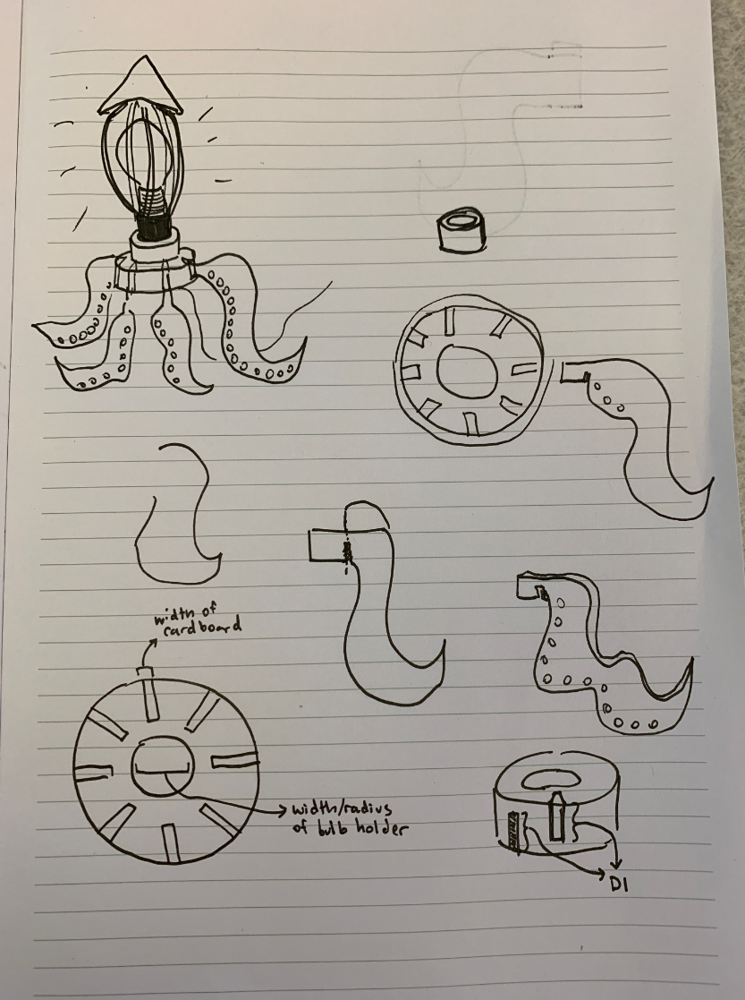
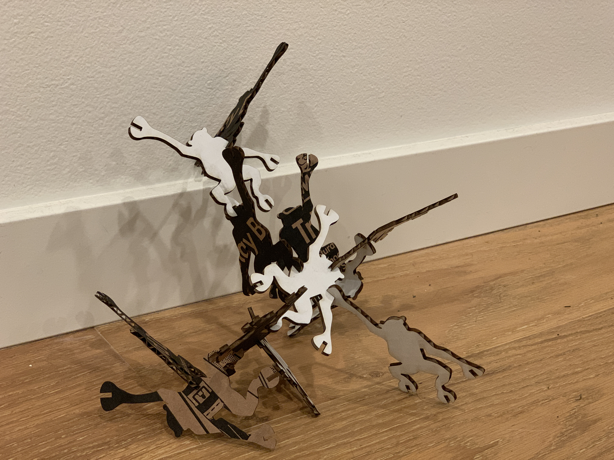
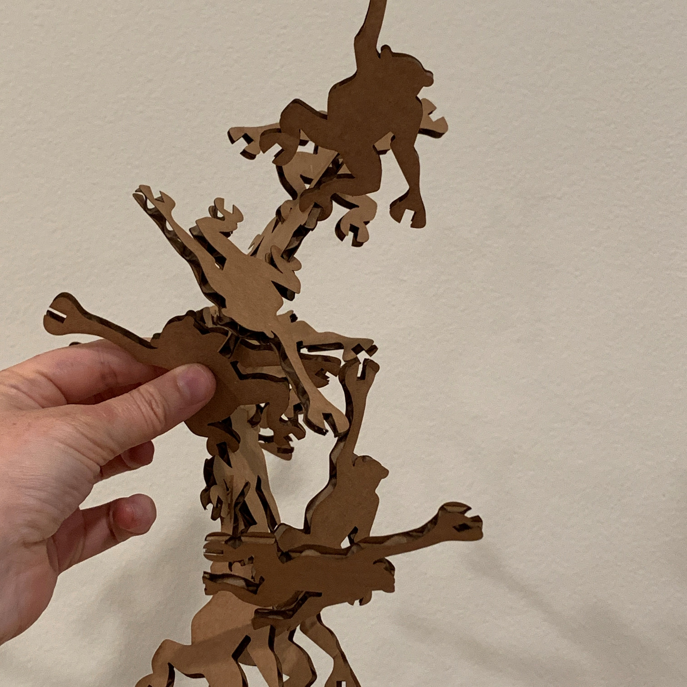

Assignment 3: Squid Lamp

For this lamp project, I wanted to stick with organic forms. I was inspired by the shape of the lightbulb itself, which reminded me of the head of a squid.
This was a complicated project. I began by sketching to come up with a concept that I was happy with. I decided that I wanted to create a ring around the base of the lightbulb that housed the 8 legs, and an additional ring where I could fit an array that gave the head more of a squid shape (with the flare out at the top).

Since I didn't yet know all the dimensions and the material I was going to laser cut the legs and head from, I decided to do this with Rhino/Grasshopper in a parameterized fashion so that I could adjust things later as I got more crisp on details.
I created extruded, capped tubes for the top and bottom pieces with a polar array of notches cut into them. The radius, height of the tubes, and dimensions of the notches (width, depth, and height) were all adjustable. The numer of notches in the polar array was also adjustable.
I decided it was time to start testing some 3D prints, even though I didn't have all the dimensions exactly figured out. I just wanted to get a sense of what I would need to troubleshoot early.
My husband brought home an Ultimaker 2 from his office, so I was able to print in the comfort of my own home.
Here are the settings I used for all the prints:
One thing I realized was that I had to flip the bottom piece over to avoid overhangs.
Once I had the basics of the top and bottom pieces figured out, I needed to design the legs and the head pieces. I started with the head, a drew a curve in Rhino that I was able to use as the base shape. I measured the dimensions of the lightbulb and created a very rough version of the lightbulb to make sure my shape calculations were accurate. Then, I created an tabbed extension for the head pieces that would fit into the notches in the cylinder.
I followed a similar process for the legs - creating a curve and then adding a tab that would fit into the notch.
I was happy with the overall size and shape of those pieces, so I headed to the Mill to laser cut them. I used 1/8" (3mm) orange acrylic that I purchased from the Mill, and I followed the recommended settings on the Eplilog (Speed = 8, Power = 100, Frequency = 100). They cut out perfectly, and I had EXACTLY 16 head pieces and 8 leg pieces.
I went back home to check on my prints, since it took 8 hours for them to finish!
They looked reasonable. I tried to fit them around the lightbulb pendant. The top one fit snugly, which was great. No changes to inner radius needed there. The bottom one was a bit too loose, so I adjusted in my Grasshopper file.
I decided to print a test - a very thin version - rather than the full cylinder.
Too big.
I printed another one. Still a bit too big.
Adjusted the settings one more time to get what I thought would be perfect fit, then started a "big print".
I wanted to see how the head and leg pieces were going to fit into the notches. I put one in and it was a pretty snug fit, so I was feeling good. But when I tried to pull it out, it snapped! I only had 7 legs :(
That's when I learned the value of creating extra parts in case something breaks. I started a new print batch and headed BACK to the Mill, where I cut 8 legs and 16 head pieces again, just in case.
Came back and checked out my print. The fit was great but the notches were too loose!
I ran a bunch of test notch prints and came to a tolerance that seemed to work reasonably well, then started the final prints for the top and bottom pieces with that tolerance.
Waited 9 hours....
Then came back. They both fit nicely around the lightbulb, though I accidentally pushed the bottom one up too high and it started bending the lightbulb switch, and it landed a little crooked - and is now too tight to fix :(
However, I ran into some issues with the notches. Even though I had printed 5 tests of the notches to get just the right tolerance, some of them were not right (the ones that were on a diagonal were too loose - seems like the printer wasn't able to handle the tight tolerance. Not sure how to account for this/correct it in the future...
I put the whole thing together and it's stable once it's all set up. I think I will probably need to glue the head and leg pieces in to make sure they stick in the looser notches.
However, it looks rad!
I'm very pleased with it overall and would probably adjust it in the following ways if I were going to redo it:
- More artful design of the cylinders. Something less blocky and chunky.
- Leaving a notch for the light switch component.
- Use glue to secure the legs at the bottom



Thanks to Emma Meersman and Elizabeth Quepons for some Grasshopper support, Leo for the great web documentation that gave me the inspiration to make my array in Grasshopper using Linear Array, and Kim Dzubinski for the moral support!